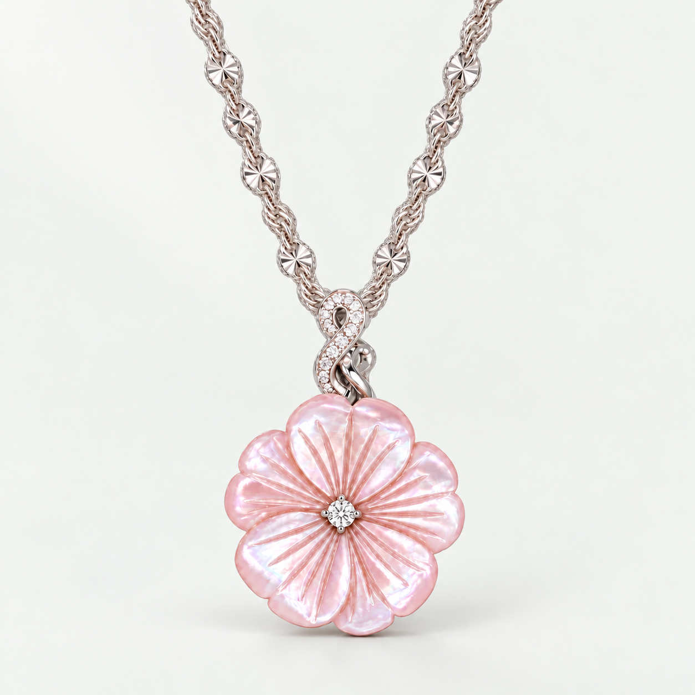
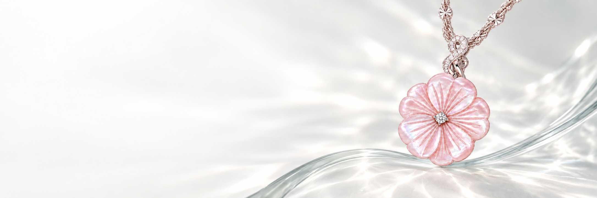
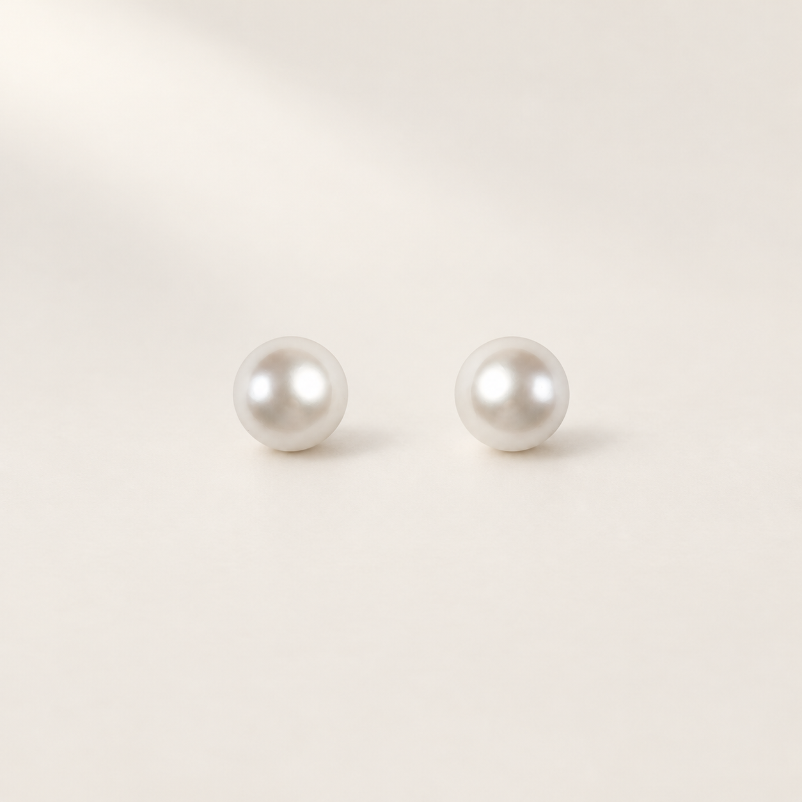

BELLA’S PICK天然粉紅珠母貝《櫻花》項鏈
NT$ 6,980
一段短短的旋律，也能讓人記住很久。
925 純銀、淡水珍珠與天然半寶石，
把 Bella 的音樂，送給重要的人。

SAKURA / A NOTE IN BLOOM
BELLA’S PICK



補貨中生日、紀念日，或只是想說「謝謝你」。
告訴我們預算與送禮對象，
讓每一份心意都有自己的旋律。
禮物搭配與包裝需求，歡迎洽詢 Bella 團隊。
新光三越天母一館 1F ｜ 台北市天母東路 68 號 ｜ 0958-331-689